A simple example: a soil-target transfer with fix or moving target
Simulation_Soil_Target.RmdPresentation of the Metaleurop Site and Data
The “Metaleurop” case involves a 40 km² site in northern France centered around a former lead smelter. Soil levels around the plant are relatively high.
Below are the extrapolated contamination maps for Cadmium (Cd), Lead (Pb), and Zinc (Zn) in the soil, derived from 595 sampling points (the extrapolation methodology is not covered in this vignette).
ground_cd <- load_raster_extdata("ground_concentration_cd_compressed.tif")
ground_pb <- load_raster_extdata("ground_concentration_pb_compressed.tif")
ground_zn <- load_raster_extdata("ground_concentration_zn_compressed.tif")
ground <- terra::rast(list(cd=ground_cd, pb=ground_pb, zn=ground_zn))
terra::plot(ground, main="Soil Concentration (log10)")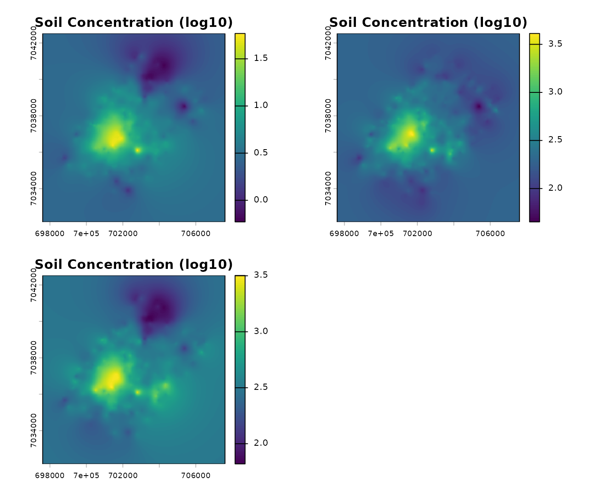
ground_df <- as.data.frame(ground, xy = TRUE, na.rm = TRUE)
plt_init = ggplot(data = ground_df, aes(x = x, y = y)) +
theme_minimal() +
labs(title="Concentration (lo10 scaled)", x="longitude", y="latitude") +
scale_fill_viridis_c()
plt_init + geom_raster(aes(fill=cd))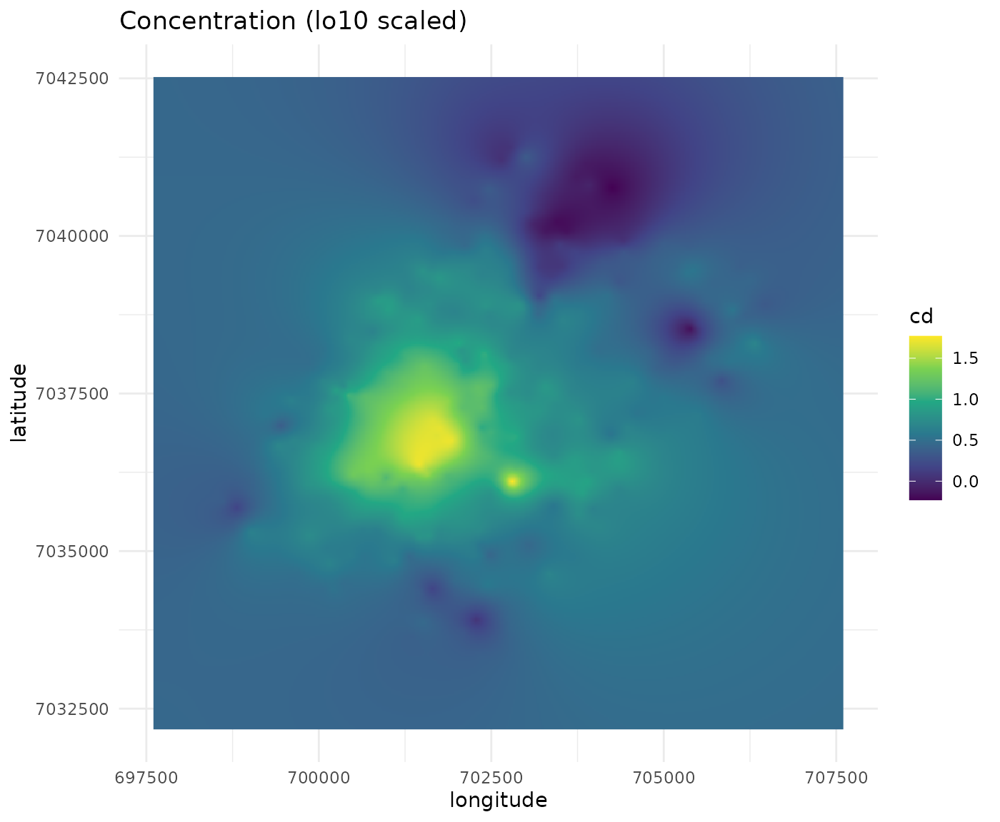
plt_init + geom_raster(aes(fill=pb))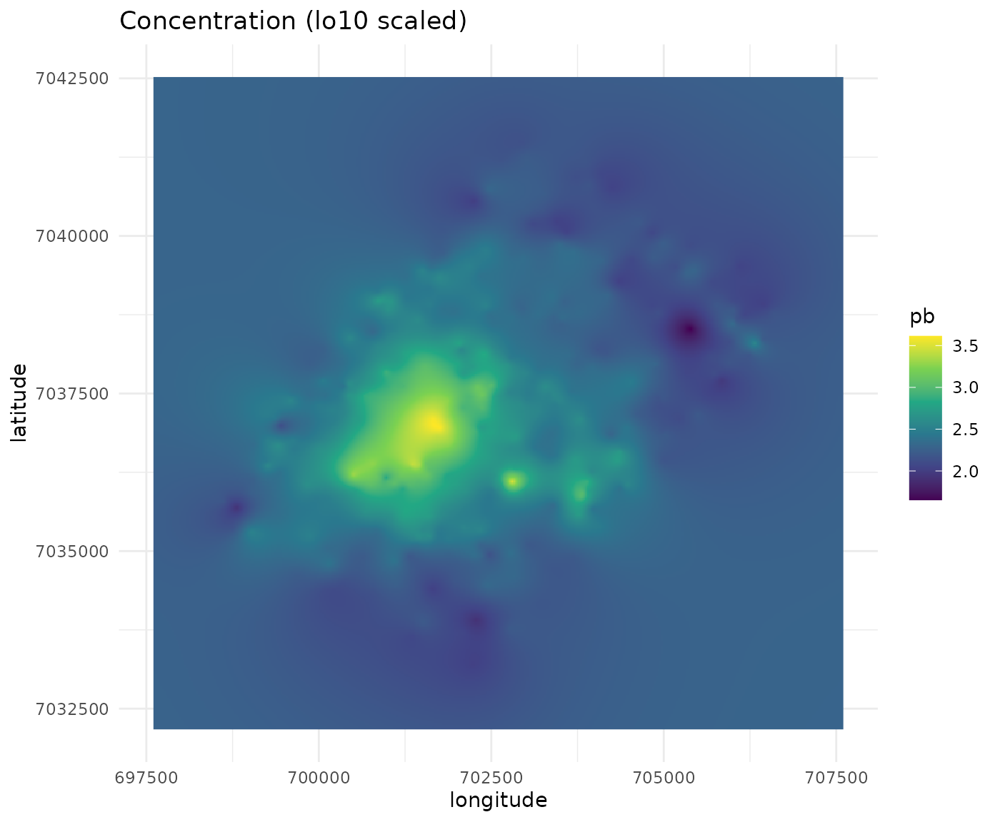
plt_init + geom_raster(aes(fill=zn))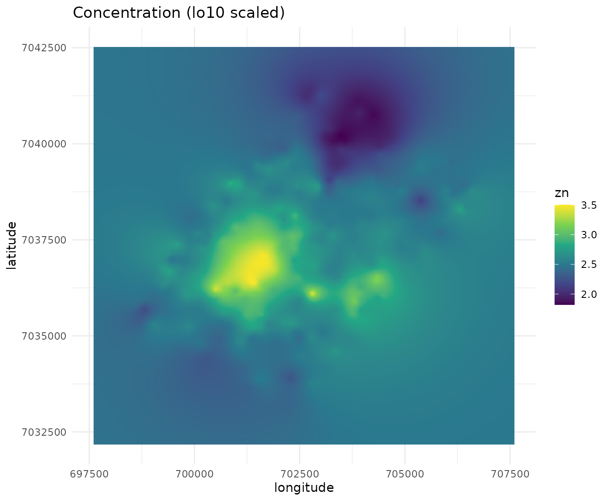
Since 2006, a total of 1426 micro-mammals (representing 9 different species) have been captured on-site to measure the bioaccumulation of metals in various organs (kidneys, livers).
To understand the relationship between soil contamination and bioaccumulation, we can categorize these mammals into two trophic groups: herbivores and insectivores. By plotting the whole-body Cadmium concentration against the soil Cadmium concentration at their capture locations, we can fit linear regression models to establish basic transfer equations.
data("sf_micromammals")
trophic_cat = ifelse(sf_micromammals$genus %in% c("crocidura", "sorex"), "insectivore", "herbivore")
sf_micromammals$trophic = factor(trophic_cat, levels = c("herbivore", "insectivore"))
ptsHerb = sf_micromammals[sf_micromammals$trophic=="herbivore", ]
ptsInsect = sf_micromammals[sf_micromammals$trophic=="insectivore", ]
lmH <- lm(log10(cd_WB_FW) ~ log10(cd_S), data = ptsHerb)
lmI <- lm(log10(cd_WB_FW) ~ log10(cd_S), data = ptsInsect)
ggplot(data = sf_micromammals) +
theme_minimal() +
labs(title="Cadmium (Cd): log10(Whole body) ~ log10(Soil)",
x="Soil concentration (log10)",
y="Whole body concentration (log10)") +
scale_x_log10() + scale_y_log10() +
scale_color_manual(
name="Trophic category",
values=c("#11aa44", "#aa4411")) +
geom_point(aes(x=cd_S, y=cd_WB_FW, color=trophic)) +
geom_abline(intercept=coef(lmH)[1], slope=coef(lmH)[2], color = "#11aa44", size=2) +
geom_abline(intercept=coef(lmI)[1], slope=coef(lmI)[2], color = "#aa4411", size=1.5) +
geom_abline(intercept= -1.2571, slope=0.4723, color = "red")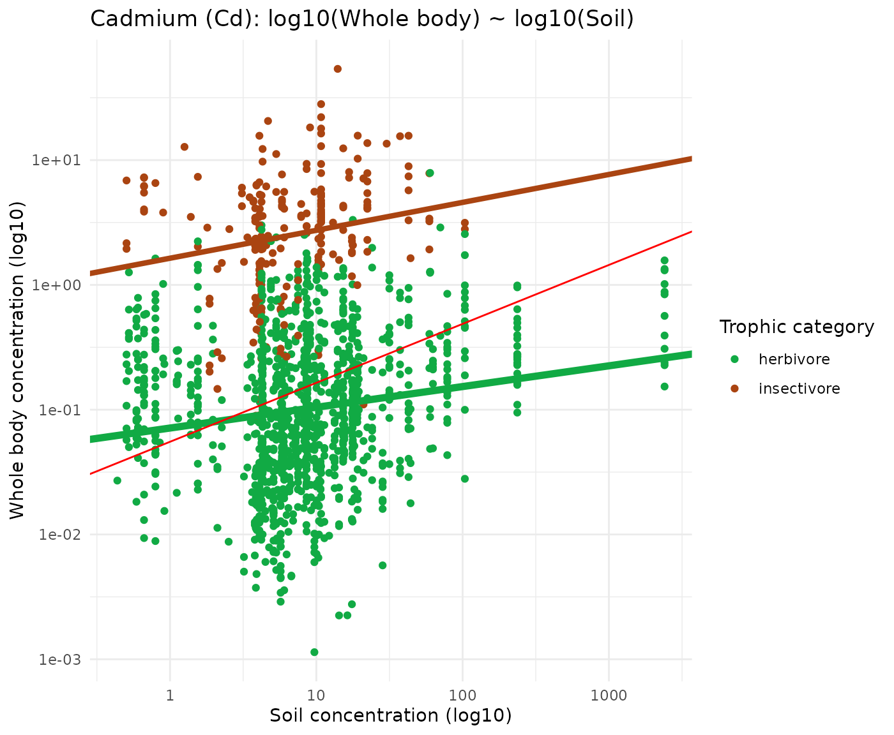
Results of Fit
fit_direct <- load_safe("raw_data/fit_direct_cd.rds")
fit_pars <- rstan::extract(fit_direct, c("beta0", "beta1", "beta_cat"))
df_pars <- dplyr::bind_rows(list(
data.frame(value=fit_pars$beta0, par="beta0"),
data.frame(value=fit_pars$beta1, par="beta1"),
data.frame(value=fit_pars$beta_cat[,1], par="beta_herbivore"),
data.frame(value=fit_pars$beta_cat[,2], par="beta_insectivore")
))Direct fix-point model of Soil-Organism
In this first approach, we will build a highly simplified spatial model. We assume that individuals do not move (fixed points) and that contamination transfers directly from the soil to the target organisms (herbivorous and insectivorous mammals), bypassing intermediate trophic levels like plants or invertebrates.
Step 1: Habitat Initialization
First, we need to define the spatial environment (habitat) for our compartments. Since this is a simple direct-transfer model, the “habitat” for all entities is simply represented by the spatial grid of the soil contamination.
# Define the compartments of our system
unique(sf_micromammals$genus)
#> [1] "crocidura" "apodemus" "myodes" "microtus" "sorex"
names_hab = c("soil", "mamHerb", "mamInsect")
# Assign the Cadmium soil raster to all compartments as their base spatial extent
list_habitat <- lapply(names_hab, function(i) ground_cd)
stack_habitat <- raster_stack(list_habitat, names_hab)
terra::plot(stack_habitat)
Step 2: Defining the Trophic Network
Next, we establish the links between our compartments. Using the
trophic() function, we create direct pathways from the
soil to both mamHerb and
mamInsect.
trophic_df <- trophic() |>
add_link("soil", "mamHerb") |>
add_link("soil", "mamInsect")
plot(trophic_df, shift=FALSE)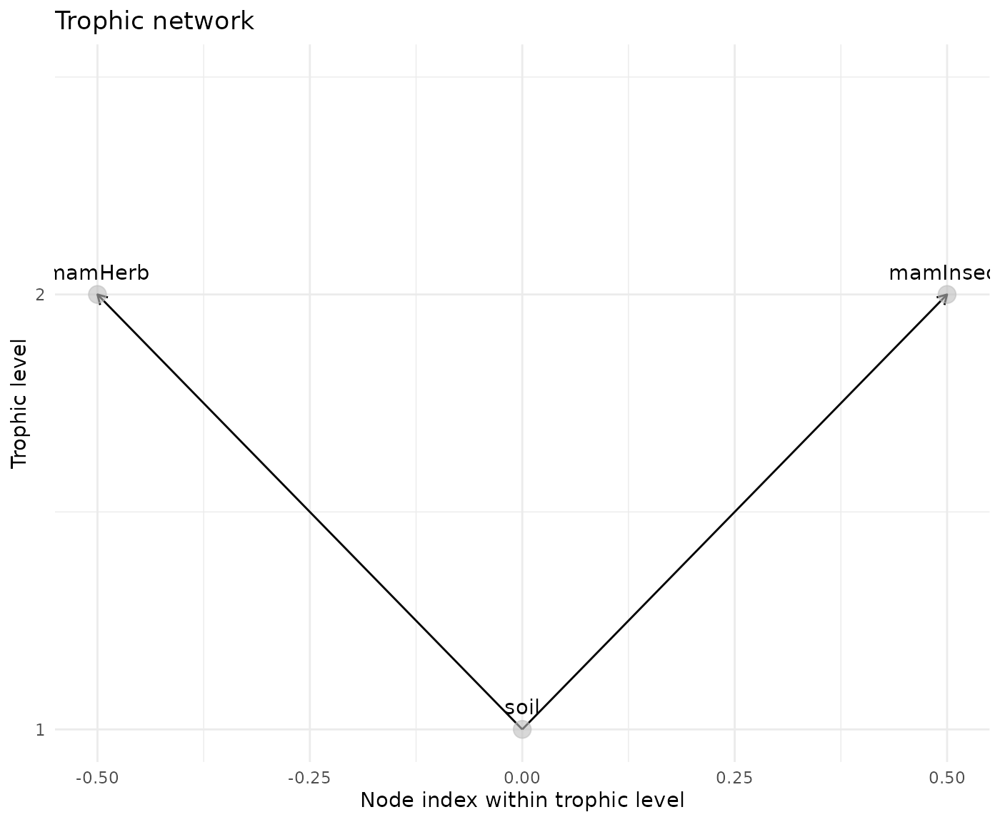
With the habitat stack and the trophic network defined, we can instantiate our base spatial model.
spcmdl_simple <- spacemodel(stack_habitat, trophic_df)Step 3: Setting the Movement Kernels (Fixed Individuals)
Because this is a “fix-point” model, we assume the organisms stay
exactly where they are. In spacemodR, we represent this lack of spatial
dispersal by setting the movement kernels to NA.
kernels <- list(
soil = NA,
mamHerb = NA,
mamInsect = NA
)Step 4: Parameterizing the Transfer Intakes
Now we define how much contamination transfers along the links we created. We use the equations derived from the linear regressions in the introduction.
For instance, the linear model for herbivores yielded roughly
,
meaning the intake formula can be written as
10^(-1 + 0.2*x).
simple_intakes <- intake(spcmdl_simple,
"soil -> mamHerb" = ~ 10^(-1 + 0.2*x),
"soil -> mamInsect" = ~ 10^(-0.2 + 0.3*x),
default = 1 # Default multiplier for any unassigned links
)
# Apply the kernels and intakes to compute the transfer through the model
spcmdl_transfer <- transfer(spcmdl_simple, kernels, simple_intakes)Step 5: Visualizing Model Predictions
The transfer function calculates the resulting concentration maps for our target mammals. We can visualize the predicted Cadmium levels for the herbivores, overlaid with the actual sampling locations
df_raster <- as.data.frame(spcmdl_transfer, xy = TRUE, na.rm = TRUE)
ggplot() +
geom_raster(data = df_raster, aes(x = x, y = y, fill = mamHerb)) +
scale_fill_viridis_c() +
geom_sf(data = sf_micromammals, color = "red", size = 1.5, alpha = 0.5) +
theme_minimal() +
labs(title = "Predicted Cadmium Concentration in Herbivores",
subtitle = "Red dots indicate mammal sampling locations",
fill = "Predicted Cd (log10)")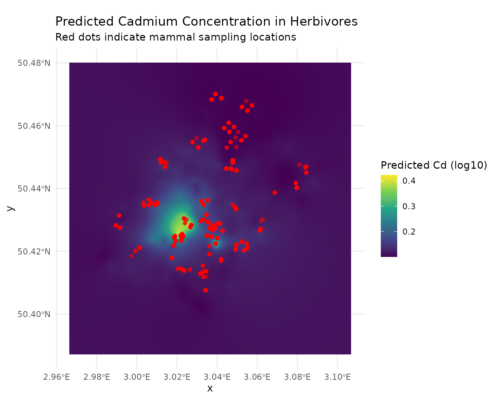
Step 6: Validation against Observations
To evaluate our model, we extract the predicted values at the exact spatial coordinates where the micro-mammals were captured and compare them directly to the observed whole-body concentrations.
# Extract predicted values at capture points
predict_insect <- terra::extract(spcmdl_transfer[["mamInsect"]], ptsInsect)
ptsInsect$predict <- predict_insect[, "mamInsect"]
predict_herb <- terra::extract(spcmdl_transfer[["mamHerb"]], ptsHerb)
ptsHerb$predict <- predict_herb[, "mamHerb"]If our model is perfectly accurate, the points should align closely with the 1:1 diagonal line (Predicted = Observed).
ggplot() +
theme_minimal() +
scale_x_log10() + scale_y_log10() +
labs(title = "Model Validation: Predicted vs Observed",
x = "Observed Whole Body Concentration (log10)",
y = "Predicted Whole Body Concentration (log10)") +
geom_abline(slope = 1, linetype = "dashed", color = "gray50") +
geom_point(data = ptsInsect, aes(x = cd_WB_FW, y = predict), color = "#aa4411", alpha = 0.7) +
geom_point(data = ptsHerb, aes(x = cd_WB_FW, y = predict), color = "#11aa44", alpha = 0.7) +
annotate("text", x = 0.01, y = 10, label = "Insectivores", color = "#aa4411", hjust = 0) +
annotate("text", x = 0.01, y = 5, label = "Herbivores", color = "#11aa44", hjust = 0)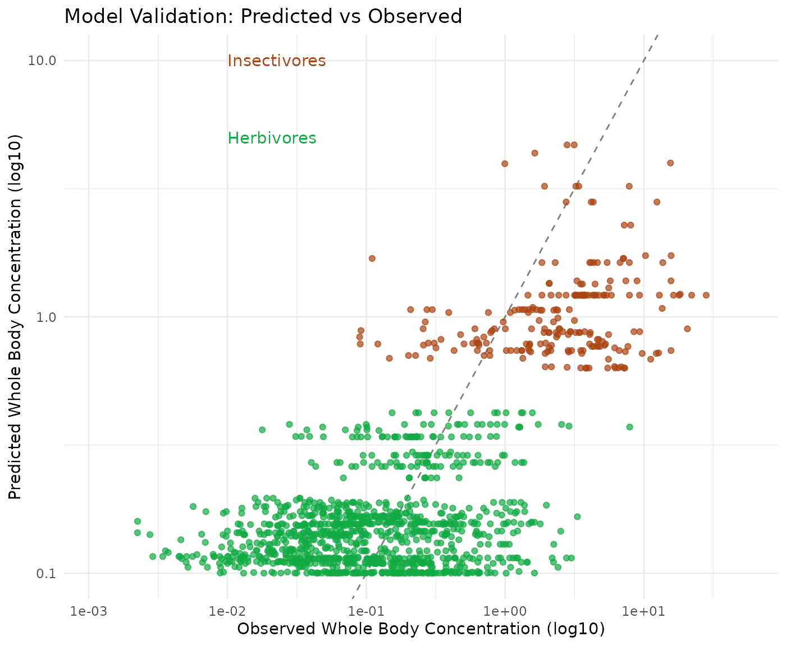
sf_predict = rbind(ptsInsect, ptsHerb)
ggplot(data = sf_predict) +
theme_minimal() +
scale_x_log10() + scale_y_log10() +
scale_color_manual(values=c("#11aa44", "#aa4411")) +
geom_point(aes(x=cd_S, y=predict, color=trophic)) +
geom_abline(intercept= -0.2, slope=0.3, color = "#aa4411" ) +
geom_abline(intercept= -1, slope=0.2, color = "#11aa44" ) +
geom_abline(intercept= -1.2571, slope=0.4723, color = "red")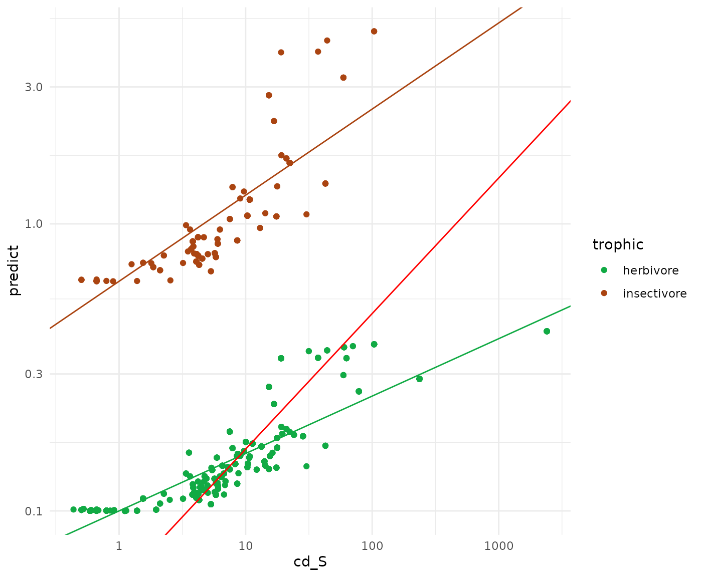
Mapping
Here we are going to compute the map of predicted concentration over the landscape.
Let first recapture the value of median:
dp_q50 <- df_pars %>%
dplyr::group_by(par) %>%
dplyr::summarise(median_value = median(value, na.rm=TRUE))
ls_q50 <- setNames(as.list(dp_q50$median_value), dp_q50$par)
names_hab = c("soil", "herbivore", "insectivore")
list_habitat <- lapply(names_hab, function(i) ground_cd)
stack_habitat <- raster_stack(list_habitat, names_hab)
trophic_df <- trophic() |>
add_link("soil", "herbivore") |>
add_link("soil", "insectivore")
spcmdl_direct <- spacemodel(stack_habitat, trophic_df)
direct_kernels <- list(soil = NA, herbivore = NA, insectivore = NA)
direct_intakes <- intake(spcmdl_direct,
"soil -> herbivore" = ~ ls_q50$beta0 + ls_q50$beta1*x + ls_q50$beta_herbivore*x,
"soil -> insectivore" = ~ ls_q50$beta0 + ls_q50$beta1*x + ls_q50$beta_insectivore*x,
default = 1, # for all other default is 1
normalize = FALSE # TRUE would weight every link to sum at 1
)
spcmdl_direct_risk <- transfer(
spcmdl_direct,
direct_kernels,
direct_intakes,
exposure_weighting="potential")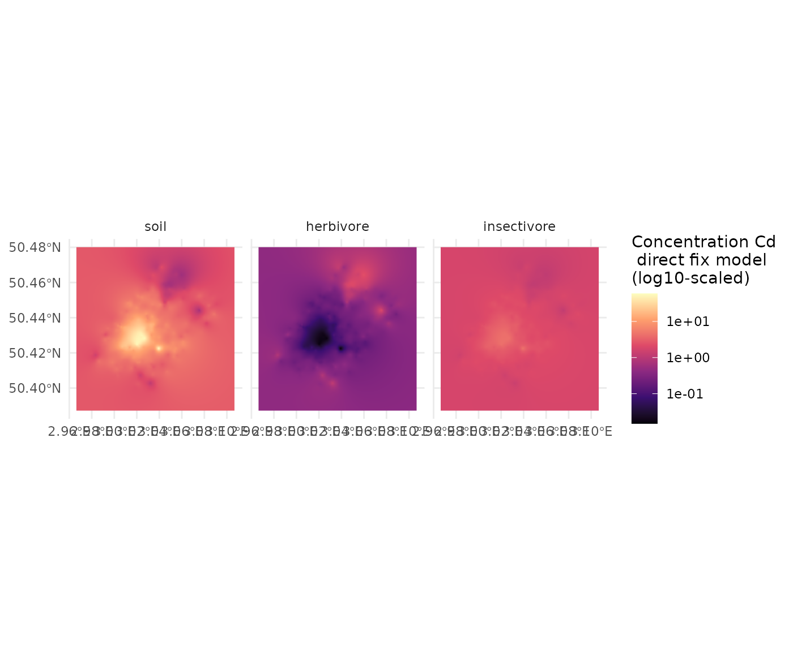
A simple Soil - Target model with Dispersal
ground_cd <- load_raster_extdata("ground_concentration_cd_compressed.tif")
# names_hab = c("soil", "plant", "invert", "mamHerb", "mamInsect", "birdInsect")
names_hab = c("soil", "mamHerb", "mamInsect")
list_habitat <- lapply(names_hab, function(i) ground_cd)
stack_habitat <- raster_stack(list_habitat, names_hab)
terra::plot(stack_habitat)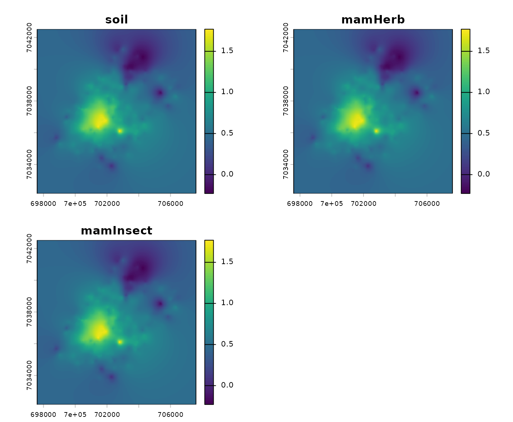
trophic_df <- trophic() |>
#add_link("soil", "plant") |>
#add_link("soil", "invert") |>
add_link("soil", "mamHerb") |>
add_link("soil", "mamInsect") # |>
#add_link("soil", "birdInsect")
plot(trophic_df, shift=FALSE)
spcmdl_simple <- spacemodel(stack_habitat, trophic_df)
k_mamInsect <- compute_kernel(radius=100, GSD=25, size_std=1.5)
k_mamHerb <- compute_kernel(radius=500, GSD=25, size_std=1.5)
kernels <- list(
soil = NA,
#plant = NA,
#invert = NA,
mamHerb = k_mamHerb,
mamInsect = k_mamInsect#,
#birdInsect = NA
)
simple_intakes <- intake(spcmdl_simple,
"soil -> mamHerb" = ~ 10^(-1 + 0.2*x),
"soil -> mamInsect" = ~ 10^(-0.2 + 0.3*x),
default = 1 # for all other default is 1
)
spcmdl_transfer <- transfer(spcmdl_simple, kernels, simple_intakes)
terra::plot(spcmdl_transfer)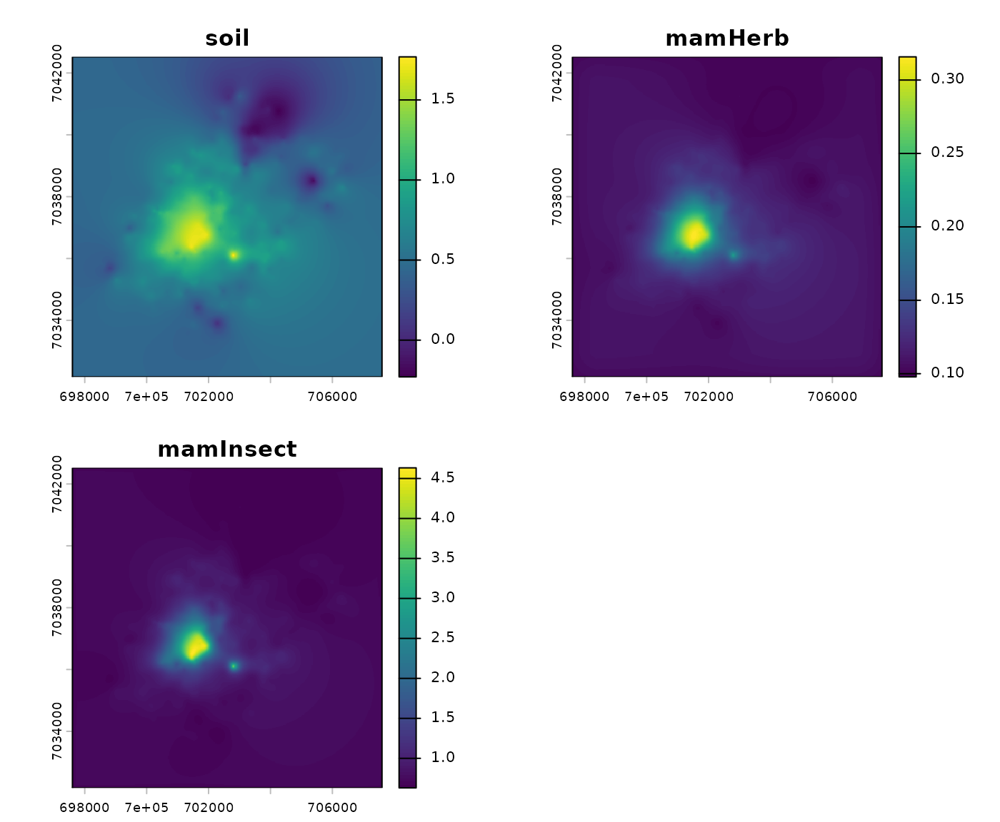
df_raster <- as.data.frame(spcmdl_transfer, xy = TRUE, na.rm = TRUE)
ggplot() +
geom_raster(data = df_raster, aes(x = x, y = y, fill = mamHerb)) +
scale_fill_viridis_c() +
geom_sf(data = sf_micromammals, color = "red", size = 2, alpha = 0.7) +
theme_minimal() +
labs(title = "Ma carte Raster + Points", fill = "Valeur")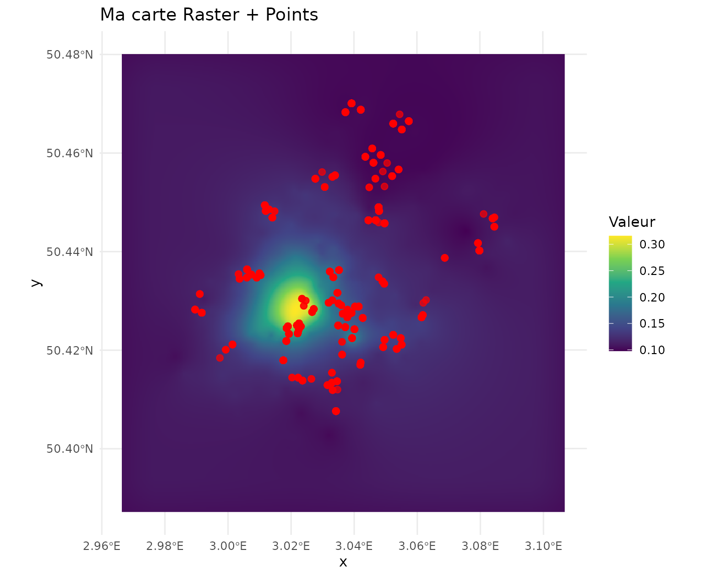
ptsInsect = sf_micromammals[sf_micromammals$trophic=="insectivore", ]
ptsHerb = sf_micromammals[sf_micromammals$trophic=="herbivore", ]
predict_insect <- terra::extract(spcmdl_transfer[["mamInsect"]], ptsInsect)
ptsInsect$predict <- predict_insect[, "mamInsect"]
predict_herb <- terra::extract(spcmdl_transfer[["mamHerb"]], ptsHerb)
ptsHerb$predict <- predict_herb[, "mamHerb"]
ggplot() +
theme_minimal() +
scale_x_log10() + scale_y_log10() +
labs(title="Predicted ~ Observed", x = "Observed", y = "Predicted") +
geom_abline(slope=1) +
geom_point(data = ptsInsect, color="#aa4411",
aes(x=cd_WB_FW, y=predict, color=trophic)) +
geom_point(data = ptsHerb, color="#11aa44",
aes(x=cd_WB_FW, y=predict, color=trophic))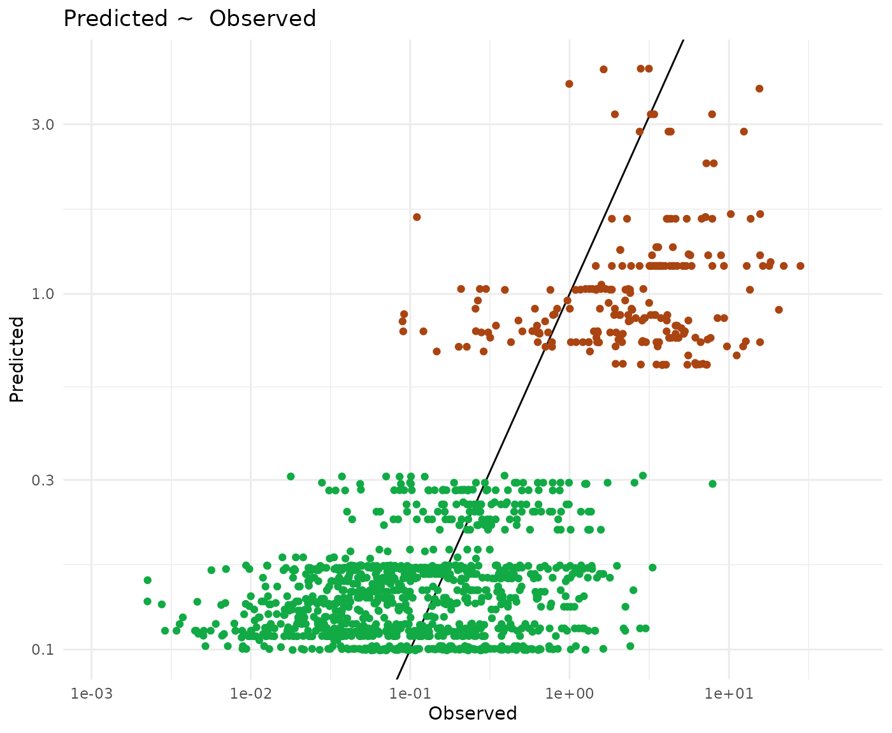
sf_predict = rbind(ptsInsect, ptsHerb)
ggplot(data = sf_predict) +
theme_minimal() +
scale_x_log10() + scale_y_log10() +
scale_color_manual(values=c("#11aa44", "#aa4411")) +
geom_point(aes(x=cd_S, y=predict, color=trophic)) +
geom_abline(intercept= -0.2, slope=0.3, color = "#aa4411" ) +
geom_abline(intercept= -1, slope=0.2, color = "#11aa44" ) +
geom_abline(intercept= -1.2571, slope=0.4723, color = "red")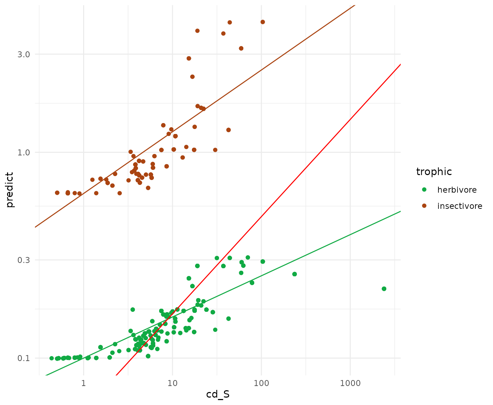